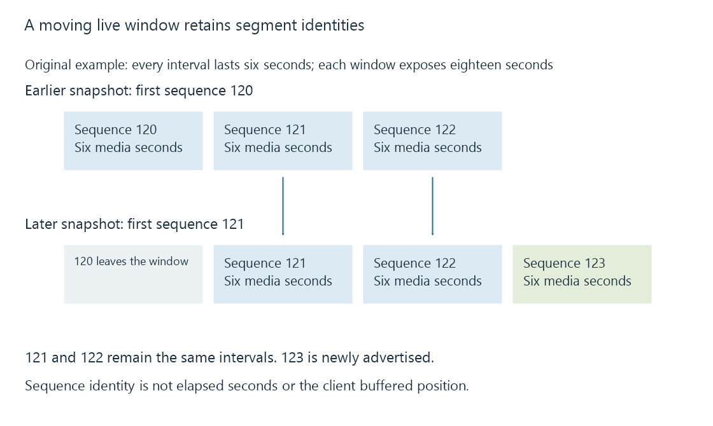

HLS playlists: variants, media order and live windows
HLS playlists describe representation choices or ordered media intervals, with tags carrying duration, initialization, publication and continuity information.
An HLS playlist is a text description that helps the player choose or locate media. Its tags give meaning to the resource names: duration, track associations, initialization, continuity and whether further intervals can appear.
Reading it as a list of filenames misses the relationships needed for playback.
Representation choices come before interval choices
This original multivariant example offers two H.264/AAC variants. The rates and dimensions are teaching inputs, not Emby defaults:
#EXTM3U
#EXT-X-VERSION:7
#EXT-X-STREAM-INF:BANDWIDTH=1728000,RESOLUTION=1280x720,CODECS="avc1.4d401f,mp4a.40.2"
720/main.m3u8
#EXT-X-STREAM-INF:BANDWIDTH=3328000,RESOLUTION=1920x1080,CODECS="avc1.640028,mp4a.40.2"
1080/main.m3u8
The URI following each EXT-X-STREAM-INF line identifies that variant's media playlist. It does not identify the first video segment.
BANDWIDTH describes a peak segment-rate requirement for the variant's playable combinations under the HLS definition; it is not a promise of the client's measured download speed. RESOLUTION gives the stated video dimensions, and CODECS describes the encoded formats the client may encounter.
A real ladder must use values appropriate to its actual media. Choosing a bandwidth number because it looks like a desirable quality label can mislead the selection policy.
A media playlist establishes order and duration
The selected media playlist can instead look like this original on-demand example:
#EXTM3U
#EXT-X-VERSION:7
#EXT-X-TARGETDURATION:6
#EXT-X-MEDIA-SEQUENCE:120
#EXT-X-PLAYLIST-TYPE:VOD
#EXT-X-MAP:URI="init.mp4"
#EXTINF:5.500,
segment-120.m4s
#EXTINF:6.000,
segment-121.m4s
#EXTINF:4.500,
segment-122.m4s
#EXT-X-ENDLIST
Each EXTINF describes the duration of the media segment named after it. These three intervals total sixteen seconds. Within this simple timeline, their cumulative boundaries are 0, 5.5, 11.5 and 16 seconds.
EXT-X-TARGETDURATION:6 is not a command to make every interval exactly six seconds long. The HLS constraint compares each media-segment duration, rounded to the nearest integer, with the target duration. The example's values satisfy that limit.
EXT-X-MEDIA-SEQUENCE:120 gives the first listed segment's sequence number. The following segments are 121 and 122. The first displayed interval can begin at programme time zero in this fictional complete presentation even though its sequence number is 120. Sequence identity and media time are different coordinates.
EXT-X-MAP supplies the initialization-resource locator for these fragmented MP4 segments. EXT-X-ENDLIST indicates that no more media segments will be added. The VOD playlist type gives additional publication rules for a completed, unchanging presentation.
Resource names have a base
Relative locators are resolved against the playlist containing them.
If the media playlist is at:
https://media.example.invalid/demo/720/main.m3u8
then segment-120.m4s refers to the same /demo/720/ directory. It does not automatically inherit the directory of a separately loaded multivariant playlist.
This address is a fictional URI-resolution example; no server was contacted. A player or receiver must be able to retrieve each resolved resource using the relevant access context. Receiving the initial playlist does not transfer all its named media along with it.
A live window can move without renumbering retained segments
Imagine two snapshots of an original six-second-interval live presentation:
| Snapshot | First sequence | Listed intervals |
|---|---|---|
| Earlier | 120 | 120, 121, 122 |
| Later | 121 | 121, 122, 123 |
The second snapshot has removed 120 and added 123. Segments 121 and 122 retain their sequence identities. A client comparing those values can distinguish retained media from newly advertised media.

In this example each window advertises eighteen seconds, but the later window covers a later programme interval. An unchanged number of rows does not mean publication has stopped.
The player also needs discontinuity context when relevant. If a removed interval carried a discontinuity marker, a rolling playlist cannot simply lose the information that establishes the remaining segments' continuity sequence.
A playlist answers a publication question
A playlist shows which resources the publisher describes at that snapshot. It does not establish that the client has fetched them, that their contents match the description or that their decoder configuration is supported.
These observations help interpret a real session:
| Observation | Evidence it supplies |
|---|---|
| A variant is listed | An offered representation and its declared attributes |
| A segment appears | An advertised media interval |
| The same sequence remains after reload | Retained interval identity in the published window |
| A segment request completes | Retrieved resource bytes |
| The player advances through that interval | Successful preparation and presentation |
See Also
- HTTP Live Streaming (HLS)
- HLS media segments and initialization
- Adaptive bitrate streaming and representation selection
- Live streams and on-demand streams
- Stream discontinuities and timeline changes